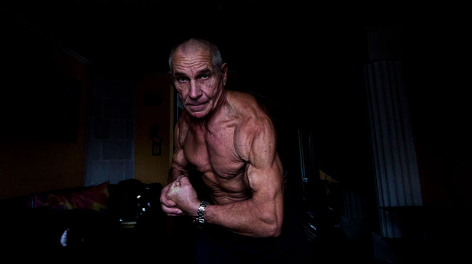
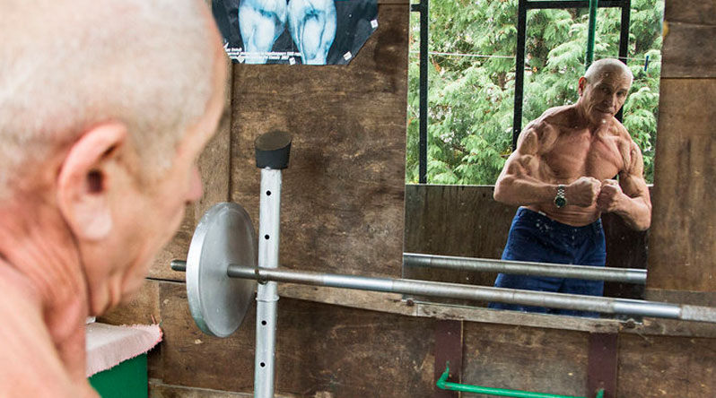
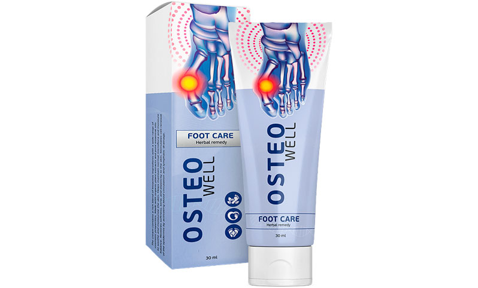

Болезни суставов и возраст всегда идут рука об руку и приводят человека в инвалидное кресло. В то время, когда большинство сдаются, такие люди, как Криштоф Седлачек, доказывают, что невозможное возможно.
Криштоф, расскажите, чем вы занимаетесь сегодня?
На данный момент нельзя сказать, что я занимаюсь бодибилдингом в полном понимании этого слова. Я не выступаю на соревнованиях и не меряюсь спортивной формой. Все-таки мне уже 65 лет.
Сейчас я работаю тренером, а сам занимаюсь, скорее, просто для здоровья. Я ем все, что пожелаю, могу даже выпить, но в разумных количествах, конечно. Но так было не всегда. В молодости я очень серьезно занимался бодибилдингом, часто выступал на соревнованиях, брал первые места.
Расскажите подробнее о вашем заболевании.
Когда мне было 53 все и началось. Резко, сразу приступ острой боли в колене. При первом осмотре врач не смог ничего конкретного сказать, списал все на якобы какую-то травму. Хотя я-то знаю, что никакой травмы не было. Каждое движение давалось с огромным трудом, просто искры из глаз от боли.
Кое-как купировал первый приступ с помощью обезболивающих. Нашел другого врача, который мне наконец-то открыл глаза: да у вас подагра. Уровень мочевой кислоты в два раза выше нормы.
Из-за чего началась болезнь, как вы считаете? Ведь вы спортсмен, а у спортсменов таких проблем не бывает.
Еще как бывают! Профессиональный спорт, в первую очередь, бьет по здоровью. Особенно по здоровью суставов.
Спортсмены – тоже люди и тоже любят вкусно поесть. Когда закончил выступать на соревнованиях, стал позволять себе больше обычного. Мясо, пиво – вот это все я очень люблю. На мясо нужно было налегать еще и при соблюдении режима питания, ведь основной рацион профессионального бодибилдера – это белки.
Распространенная практика в бодибилдинге – злоупотребление диуретиками, когда перед соревнованиями нужно срочно сбросить объемы и избавиться от лишней жидкости. Именно из-за мочегонных препаратов мочевая кислота задерживается в организме и откладывается в суставах, вызывая подагру. Я думаю, основная причина в этом.

Как же вы боролись с этим недугом?
Врач меня предупредил, что интенсивные тренировки при подагре исключены. Но как так? Я всю жизнь посвятил любимому делу и не собирался его бросать.
Решил: методом проб и ошибок найду стоящее средство, которое даст мне возможность вернуться в спортзал. Спортсмен остается спортсменом, даже если он уже на пенсии. Так что воля к победе, спортивный дух – эти качества помогли мне не остановиться и продолжить свою борьбу.
Что вы опробовали и какое средство в итоге вам помогло?
Ой, чего только я ни успел опробовать. И таблетки, и кремы, и мази… Внимал абсолютно каждому совету.
Среди спортсменов болезни суставов – распространенная проблема, так что я постоянно спрашивал совета у бывших коллег. От одного из них как раз и узнал о средстве, которое моментально снимает боль в суставах даже при сильных приступах.
И правда – после первого же применения почувствовал облегчение. Стал регулярно использовать, когда начинались резкие приступы боли. Через какое-то время понял, что больше не испытываю того дискомфорта.

Первое время решил заниматься умеренными физическими нагрузками, чтобы, так сказать, почувствовать потенциал организма. Начал с бега и аэробных нагрузок. Оборудовал небольшой домашний «спортзал» на дачном участке. Занимался так примерно год. Постепенно вернул физическую форму. Один старый знакомый открыл спортклуб и позвал меня работать тренером. Так я и вернулся к любимому занятию.
Как называется это волшебное средство?
Это Osteowell. Спортсмены часто используют его при проблемах с суставами и травмах. Именно благодаря этому средству я смог вернуться в спорт. Буквально за месяц Osteowell поставил меня на ноги, о подагре больше не вспоминаю.

Где можно приобрести Osteowell?
Я покупал и в аптеках, и в спортивных магазинах. Сейчас в нашем спортклубе есть небольшой магазинчик с различным инвентарем и сопутствующими товарами, Osteowell там тоже продается. Я поинтересовался, где его закупают – оказалось приобрести Osteowell можно на сайте производителя и без наценок. В аптеках баснословных денег стоит, а тут вполне сносная цена.
Что вы можете посоветовать нашим читателям напоследок?
Ну, что я могу посоветовать… Никогда не сдаваться и идти к своей цели. И заниматься спортом, конечно. Но без фанатизма. Меру нужно знать во всем, даже в хороших вещах, только тогда они будут во благо.
От редакции: по просьбам наших читателей размещаем ссылку на сайт, где можно приобрести Osteowell:
Ничего себе дед! В отличной форме!
В жизни бы не сказала, что Криштофу 65. Выглядит максимум на 40
У моего папы тоже была подагра. Он, конечно, не спортсмен, но спасается только Osteowell. Со временем приступы боли практически на нет сошли. Тоже узнали какими-то окольными путями о нем, почему никто не говорит о таком замечательном средстве?
Karolína, говорят, еще как, вы что. Давно это средство на слуху
Вот это по-настоящему спортивное поведение – никогда не сдаваться. Криштоф, вы молодец! Вдохновляюсь и восхищаюсь такими людьми, как вы.
Подагра – знакомая мне проблема… большое спасибо за ссылку, буду лечиться
А я всегда считала, что фанатично-здоровый образ жизни ни к чему хорошему не ведет
Тоже заказала Osteowell! Видела в аптеке – в два раза дороже стоит
Уже вчера получил посылку с Osteowell у курьера
Вы молодец! Завидую!
Спасибо, Криштоф, что поделились замечательным средством! Заказал, жду посылку
Ого, здорово